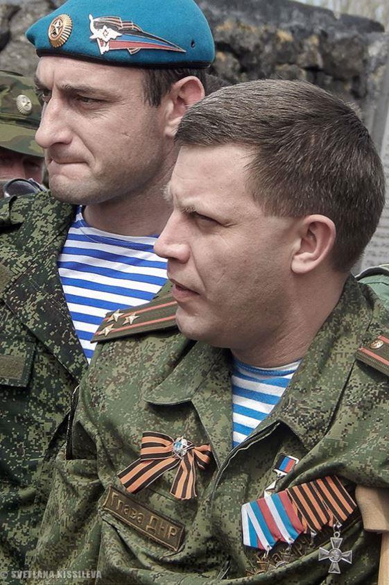
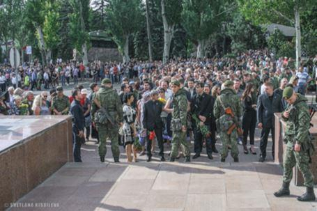
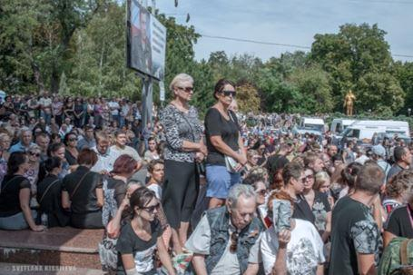
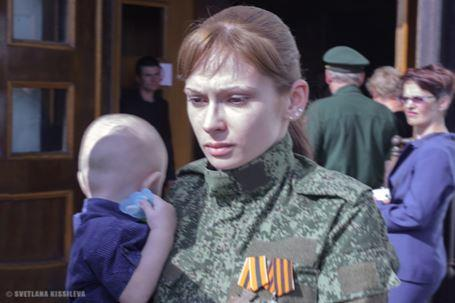
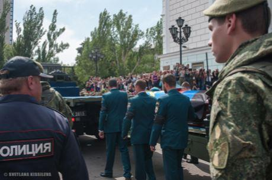
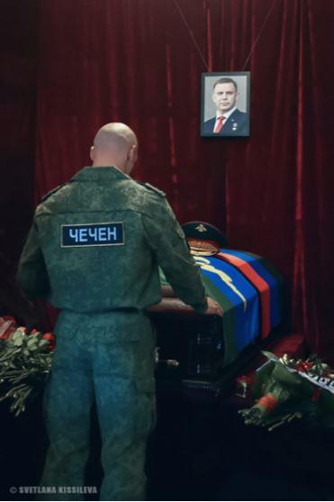
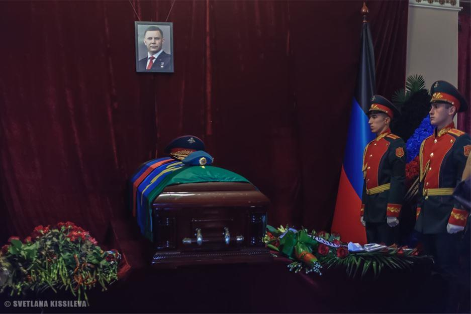

31 août 2018, une explosion secoue le cœur de Donetsk… Déchirant la « trêve scolaire », elle va emporter Aleksandr Zakharchenko, Président de la République Populaire de Donetsk, son garde du corps, et anéantir l'espérance déjà fragile d'un règlement pacifique de ce conflit qui martyrise depuis 4 ans la population du Donbass. Erwan Castel est un volontaire breton engagé dans l'armée républicaine ; il nous confie depuis le front de Yasinovataya (au nord de Donetsk) les échos de cette tragédie.
LE JOUR D'APRÈS…
(Extrait du « journal du front », samedi 1er septembre 2018)
8h00, je me lève une nouvelle fois avec trop peu d'heures de sommeil dans la musette, réveillé après 2 heures de repos par le chant de la scie et la percussion de la hache débitant le bois de cuisine. Après mes premières pensées instinctivement dirigées vers un amour éloigné et le silence pesant du champ de bataille, le reflet du Président Zakharchenko, assassiné la veille dans un lâche attentat au cœur de Donetsk, m'accompagne vers le feu crépitant sous la bouilloire...
J'aurais préféré sortir d'un cauchemar, et même si cette tragédie était prévisible depuis la vague d'attentats qui a frappé une bonne quinzaine de personnalités des Républiques du Donbass depuis 3 ans, le choc est immense.
Tel un tsunami l'événement ne cesse de s’insinuer dans l'esprit et le cœur tandis que la raison tente d'en analyser, et sereinement, les conséquences potentielles. Malgré mon optimisme quant au devenir du Donbass libre, des inquiétudes et interrogations m'assaillent ce matin. Si j'ai toujours été rétif à toute forme d'idolâtrie, des dieux, des morts, et plus encore des vivants, je dois reconnaître cependant que les tragédies de l'Histoire exigent et donnent d'ailleurs naissance à des héros qui, et parfois malgré eux, protègent leur pays et sauvent le rêve humain.
Aleksandr Zakharchenko était de ces hommes, trempés dans les traditions de sa terre et le feu de la guerre. Malgré ses humaines faiblesses qui n'étaient souvent que les revers de ses nobles qualités, cet ingénieur électricien de 42 ans avait su, par la force de son exemple et son charisme exceptionnel, donner chair à la résistance du Donbass, mais aussi au rêve millénaire d'une République populaire.
Aujourd'hui au sortir de cette tragédie, trois dangers menacent Donetsk dans cet inévitable période de transition où le pouvoir va devoir se rétablir dans son commandement, mais aussi les esprits et les cœurs.
Premier danger : une offensive ukrainienne qui profiterait et/ou prolongerait cet attentat qui est autant une décapitation temporaire du gouvernement qu'une provocation appelant les forces républicaines à une réaction logique et légitime. Car, dès les premières heures de l'enquête, la griffe kiévienne apparait clairement. Porochenko chercherait à cette occasion une victoire militaire, exploitant cette tragédie provoquée, afin d’être en position de force avec le nouveau président de la RPD, et aussi la capitaliser pour sa campagne présidentielle de mars 2019.
Deuxième danger : une lutte de pouvoir souterraine, pas tant pour la charge présidentielle mais surtout pour celles de ses satellites ministériels. En effet le Donbass, malgré son séparatisme n'a pas pu, essentiellement à cause de la guerre, se débarrasser complètement de l'héritage d'une Ukraine post soviétique délétère. Or, « Zakhar », avec ses compétences multiples, son travail inlassable, servis par une intelligence de cœur et la force de son exemple, savait convaincre autant que commander, et même punir ceux qui sortaient du chemin républicain tracé en 2014. En effet, comme partout ailleurs de par le monde, les alcôves du pouvoir à Donetsk sont « infectées » par des arrivistes, intrigants, et autres courtisans à breloques qui veulent leur part du pouvoir et des honneurs misérables. Il en est ainsi de la nature humaine, et seule la force au service de la probité peut sauver le Politis des marigots du pouvoir.
Troisième danger : une fracture de l'unité républicaine. La guerre a en effet frappé durement les habitants du Donbass, dans leurs chairs et leur bien-être. Mais, malgré la fracture sociétale immense provoquée par une ligne de front violente séparant les zones bombardées des vitrines du centre-ville, une cohésion sociale s'est maintenue autour du projet républicain et de la rébellion anti-Maïdan. Cette cohésion reposait en partie sur le charisme de Zachar qui savait, par ses discours et ses actes, dissiper la peur et la fatigue dans les cœurs.
Les peuples comme les communautés civiles, religieuses ou militaires, ont besoin, dans les tourments de leurs histoires et surtout dans les guerres, de chefs qui les guident et soudent leur unité. Ces hommes d'exception sont rares, et leur relève lorsqu'ils disparaissent est un véritable défi !
Mais malgré tous ces défis et menaces, je reste optimiste et confiant en la victoire des cœurs et des armes et, aujourd’hui, je fredonne ce chant des partisans (créé par la russe Anna Marly faut-il le rappeler ?) : « Ami si tu tombes, un ami sort de l'ombre à ta place. » qu'un commentateur évoquait hier, si justement.
Car notre combat – celui pour la Liberté des peuples – est déjà victorieux car il est juste et guidé par l'Honneur et l'Amour, ces legs immortels qu'Aleksandr Zakharchenko nous a offert avant de rejoindre le régiment des immortels.
UNE UNION SACRÉE INVINCIBLE
Le Donbass éternel et russe, vient en cette journée du 2 septembre 2018 rendre hommage et dire adieu à son commandeur, lâchement assassiné par la haine kiévienne. Ce sont plus de 200 000 personnes qui sont venus en silence, une fleur à la main et les larmes dans les yeux, saluer celui qui a défendu leur Liberté, et donné chair à leur rêve républicain.
Ce rassemblement est plus qu'un deuil ou un hommage collectif à une victime de la barbarie occidentale. C'est aussi et surtout un plébiscite, un cri d'amour pour un pays, un peuple une Histoire, et un projet que cet homme incarnait et qui lui survivront dans le cœur de chaque citoyen de la République Populaire de Donetsk.
Cet assassinat lâche, qui révèle une fois encore l'amoralité et l'abjection du camp occidental en voulant décapiter le Donbass, n'a fait que renforcer la détermination de sa population à défendre sa Liberté jusqu'à ce que soit balayé ce pouvoir fantoche de Kiev, et condamnés tous ses assassins.
Cette immense tristesse collective est le témoignage de la réalité et l'invincibilité de ce peuple dont chaque homme, femme ou enfant aujourd'hui s'appelle Zakharchenko ! Par son sang, Aleksandr Vladimirovitch Zakharchenko aura scellé pour l’éternité l'union sacrée du Donbass et, désormais, le glas sonne pour ce monstre sanguinaire vomi par le Maïdan.
Au Nord de la cité rebelle, sur les remparts de Yasinovataya, venant de l'Est, un vent nerveux balaie la steppe et, sur le volcan du front, porte sa colère vers les lignes ukrops...
« Vous ne passerez pas ! ».
COMMANDEUR, REPOSEZ EN PAIX !
« Toute ma vie j'ai été fier d'être originaire de Donetsk. Chaque maison, chaque rue, je peux te dire quand elles ont été construites et par qui. Les statues et monuments, j'en connais presque tous les architectes. Je peux te raconter quelles fleurs poussent dans nos rues et combien on a de roses... Je peux te dire aussi quelles batailles ont eu lieu en 1941, 1942 et 1943. En Ukraine il n'y a que deux endroits comme ça ; les habitants de Lviv sont fiers de leur ville, et les habitants de Donetsk de la leur. L'Occident et l'Orient, c'est tout. Et nous avons toujours pensé que nous étions russes. Toujours. »
Alexandre Zakhartchenko, Président de la République Populaire de Donetsk, assassiné le 31 août 2018 dans un attentat terroriste perpétré par le régime de Kiev.
Que le souvenir des morts soit la force des vivants !
Partager cette page